地政学
ボゴタは大統領府、議会、最高裁、中央銀行、各省庁、大使館が集まる内陸首都です。麻薬、和平、移民、森林、石油、米国との関係、近隣国危機がここで制度化され、山裾の街路に政治の緊張が現れます。和平も近いです。

🇨🇴 コロンビア / 首都地区 / World City Atlas
標高約2,600メートルのサバナに広がるコロンビアの首都。大統領府、議会、金融街、大学、BRT、丘陵住宅、食市場、紛争記憶、湿地と水源が一つの高地都市で重なります。
都市の骨格
ボゴタはカリブ海の港でも太平洋の玄関でもなく、アンデス東部の高原に置かれた内陸首都です。山裾の旧市街から北の金融軸、南西の住宅地、湿地、空港、BRTの幹線まで、標高の高い盆地が政治と日常を受け止めます。
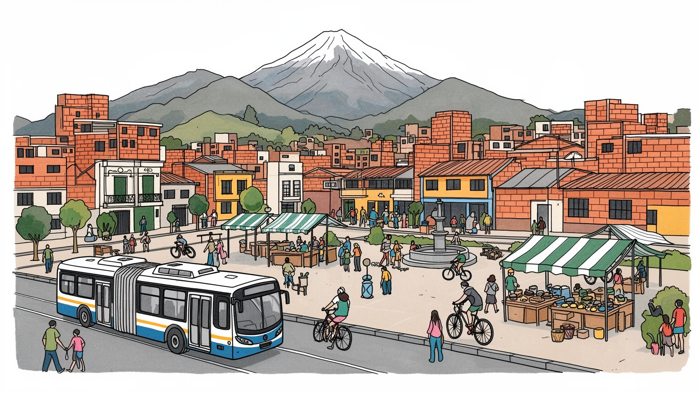
ボゴタは大統領府、議会、最高裁、中央銀行、各省庁、大使館が集まる内陸首都です。麻薬、和平、移民、森林、石油、米国との関係、近隣国危機がここで制度化され、山裾の街路に政治の緊張が現れます。和平も近いです。
金融、行政、大学、医療、IT、物流、印刷、花卉、飲食、家事労働が都市を動かします。専門職と非公式労働、通勤販売、配送、清掃、警備が同じ幹線を使い、賃金差と移動時間が生活の条件を大きく分けます。技能も必要。
ラ・カンデラリアの教会、大学、劇場、壁画、書店、博物館が、カトリックの記憶と若い文化を結びます。国内各地から来た人々の音楽、食、信仰、抗議の表現が混ざり、首都らしい多声性を生みます。祈りも近いです。
観光客は黄金博物館、モンセラーテ、旧市街、市場を歩きますが、住民には治安、家賃、坂道、通勤、雨、空気、格差が日常です。都市の魅力は名所だけでなく、朝のバス停と食堂に見える生活の厚みにあります。毎日です。
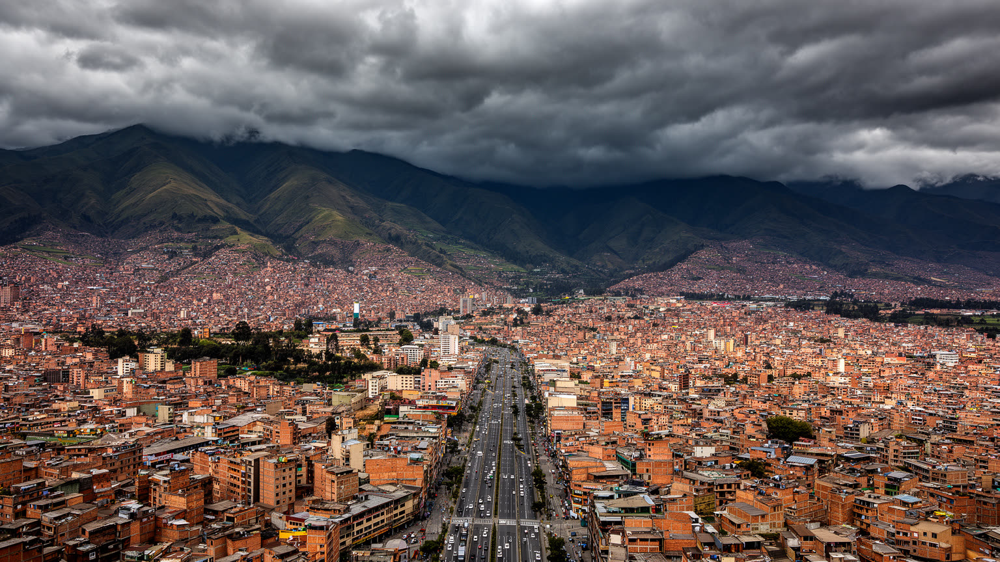
ボゴタはアンデス東部山脈の高い盆地、サバナ・デ・ボゴタに広がる都市です。標高は約二千六百メートルで、赤道に近いのに暑帯の港町とはまったく違う涼しさがあります。東側の山並みは旧市街と大学街の背景になり、モンセラーテの丘は宗教、観光、都市の方位感覚をまとめる目印です。平坦に見える高原にも湿地、河川、低地、旧農地が残り、都市の拡大はそれらを埋め立て、道路と住宅に変えてきました。北へ向かうと所得の高い住宅地や企業地区が伸び、南と西には人口密度の高い住宅地、工業、物流、空港への動線が広がります。山が美しい景観を作る一方、斜面の開発、雨による地滑り、河川の汚染、大気の滞留も課題です。高地であることは気候を穏やかにしますが、貧しい世帯ほど寒さ、湿気、長い通勤の負担を受けやすくなります。さらに高原の端に残る湿地は、鳥や水だけでなく洪水を受け止める都市の余白です。そこを失うと、住宅地の安全と水質は同時に悪化します。東の山は都市の景観であると同時に、どこまで建ててよいかを問い続ける境界です。西へ広がる平地も無限ではなく、農地、湿地、道路が競合します。季節の雨も土地利用を左右します。ボゴタの地図を読むときは、旧市街の石畳だけでなく、山裾、湿地、空港、南西部の幹線道路まで一つの都市環境として見る必要があります。
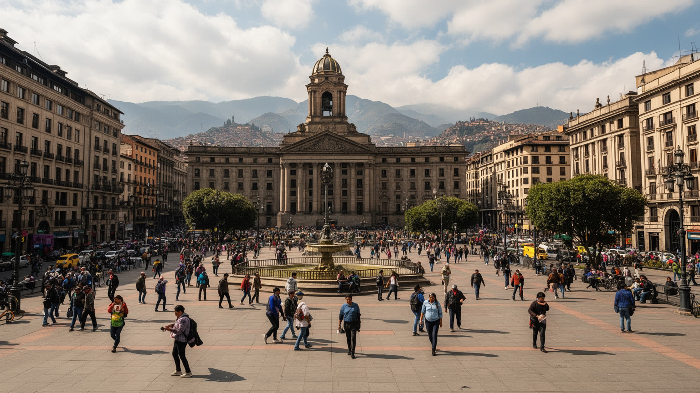
ボゴタはコロンビアの政治制度が集中する首都です。プラサ・デ・ボリバルの周辺には大統領府、議会、最高裁、市庁舎、教会が集まり、国家の儀礼と抗議の場が同じ広場に重なります。コロンビアの政治は、内戦、和平交渉、麻薬取引、土地問題、先住民とアフロ系住民の権利、森林保護、石油と鉱業、ベネズエラ移民への対応を切り離せません。地方の暴力や貧困は、首都の政策文書だけでなく、デモ、避難民の居住、大学の議論、裁判、報道としてボゴタに届きます。大使館や国際機関も多く、米国、欧州、近隣アンデス諸国との関係が都市の外交的重みを作ります。一方で、中央集権的な首都への不信もあります。山地、太平洋岸、カリブ海岸、アマゾンの現実をボゴタの行政がどこまで理解できるかは、国の統合に関わる問題です。首都の街路では警備、抗議、文化イベント、観光が近接し、政治が日常の移動に入り込みます。学生や労働組合の行進が旧市街へ向かう時、遠い地域の要求は広場の音になります。政府に近いことは、発言を届けやすい一方、衝突も起こしやすい条件です。中央政府、首都市長、警察、市民団体の関係も常に緊張を含み、治安と権利の線引きが問われます。選挙の熱気も街路に残ります。今も。ボゴタを見ることは、制度と社会的な傷がどのように同じ広場へ集まるかを見ることです。
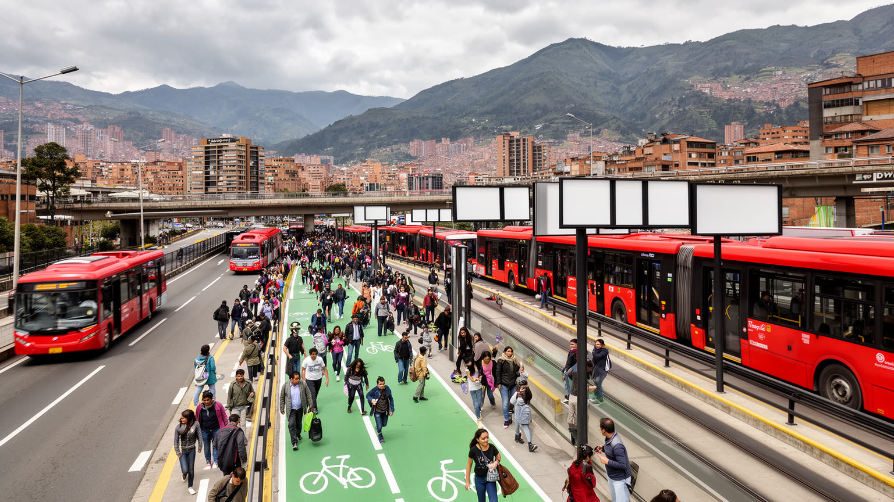
ボゴタの移動を語るうえで、トランスミレニオは欠かせません。専用レーンを走るBRTは、地下鉄が長く整備されなかった都市で大量輸送を担い、南北の幹線、都心、住宅地、企業地区を結んできました。赤い連節バスと駅は都市の象徴になり、短期間で公共交通容量を増やした成功例として注目されました。しかし、人口増加と都市の広がりに対して混雑は激しく、乗り換え、治安、運賃、駅の過密、バスの排気、長い通勤時間が住民の不満を生みます。自転車道や日曜のシクロビアは、車中心ではない都市文化を示す一方、雨や坂、治安、距離は移動の平等を難しくします。低所得層ほど遠い地区から通い、片道一時間以上を公共交通に費やすことも珍しくありません。空港、物流道路、郊外自治体との接続も、首都圏全体の生活を左右します。将来の鉄道整備が進んでも、駅までの徒歩、支線バス、夜間の安全、運賃統合がなければ負担は残ります。交通の改善は車を減らすだけでなく、通学、介護、買い物の時間を取り戻すことでもあります。道路を売り場にする人や、自転車で配達する人も移動制度の一部です。ボゴタの交通問題は、単にバスを増やす話ではなく、住宅の場所、仕事の分布、所得格差、公共空間の安全を同時に扱う課題です。移動の質は、誰が都市の機会へ届けるかを決める社会政策でもあります。
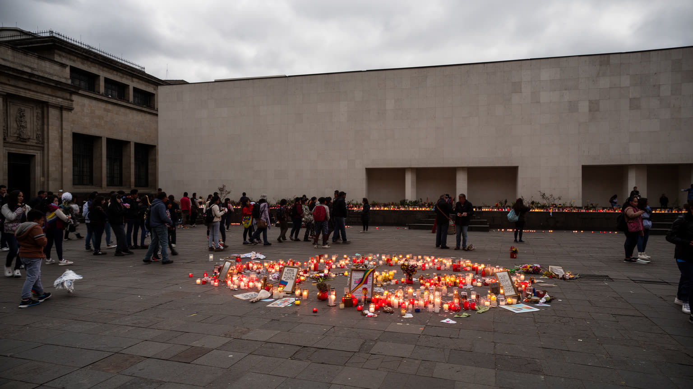
コロンビアの長い武力紛争は、ボゴタから遠い農村や山地だけの出来事ではありません。暴力、土地の奪取、誘拐、麻薬経済、準軍事組織、ゲリラ、国家機関の失敗は、多くの国内避難民を首都へ押し出しました。ボゴタの周縁部には、地方から逃れてきた人々が住まいと仕事を探し、非公式な住宅地や低所得地区を作ってきた歴史があります。記憶施設、大学、報道、裁判、市民団体は、被害者の証言や和平合意の意味を都市の中で問い続けます。抗議行動では、学生、先住民団体、農民組織、労働者、女性団体、被害者家族が中心部へ集まり、地方の痛みを首都の広場へ持ち込みます。和平は署名で終わるものではなく、土地返還、真相究明、元戦闘員の社会復帰、警察改革、地域の安全を伴わなければ生活に届きません。ボゴタでは、政府機関と市民社会が近い距離で向き合うため、記憶は博物館の展示だけでなく、壁画、行進、教会、大学の討論、避難民の市場労働として現れます。避難してきた家族にとって首都は安全な終点であると同時に、家賃、差別、失業に向き合う新しい出発点です。子どもが学校に入り、親が非公式な仕事を探す過程にも紛争の余波は続きます。追悼は公共空間の使い方にも影響します。今も。都市を読むには、観光地の明るさと、沈黙しがちな暴力の記憶を同時に見る必要があります。
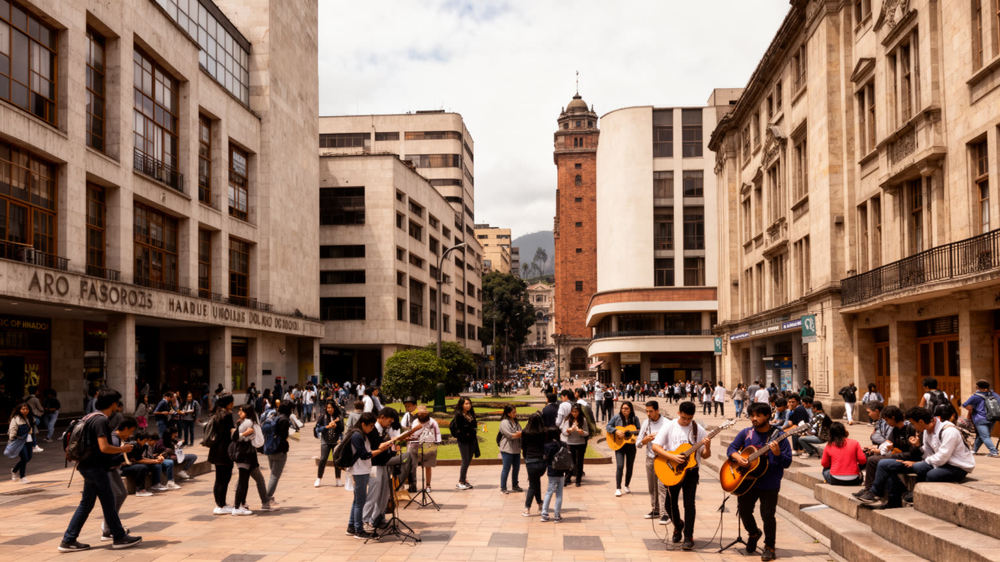
ボゴタは大学と文化施設が密集する都市です。国立大学、アンデス大学、ハベリアナ大学などの周辺には学生、研究者、出版社、カフェ、劇場、映画館、書店が集まり、政治討論と芸術表現の空気を作ります。ラ・カンデラリアでは植民地期の建築、教会、博物館、路地の壁画が近く、歴史と若い文化が同じ通りに並びます。音楽ではクンビア、バジェナート、ロック、ヒップホップ、電子音楽が混ざり、国内各地から来た人々の記憶が首都の夜に流れ込みます。文学、演劇、映画祭、独立系書店、図書館網も、ボゴタを単なる行政都市ではない知的な中心にしています。一方で文化の場は家賃、治安、資金不足、検閲的な圧力、商業化に左右されます。大学街の活気は、学費、学生ローン、若者の失業、不安定な仕事とも隣り合います。文化都市としてのボゴタの強さは、華やかなフェスティバルだけでなく、公共図書館、地域の音楽教室、壁画を描く若者、政治を語る学生食堂のような小さな場にあります。公共図書館が郊外の子どもに学習の場所を与え、路上の壁画が政治的な記憶を見える形にします。文化は都心の消費ではなく、都市に参加する方法でもあります。学びの場であり、批評の場です。今も。首都の文化は、国内の多様な地域を受け入れ、時に衝突させながら、新しい表現を作る装置になっています。
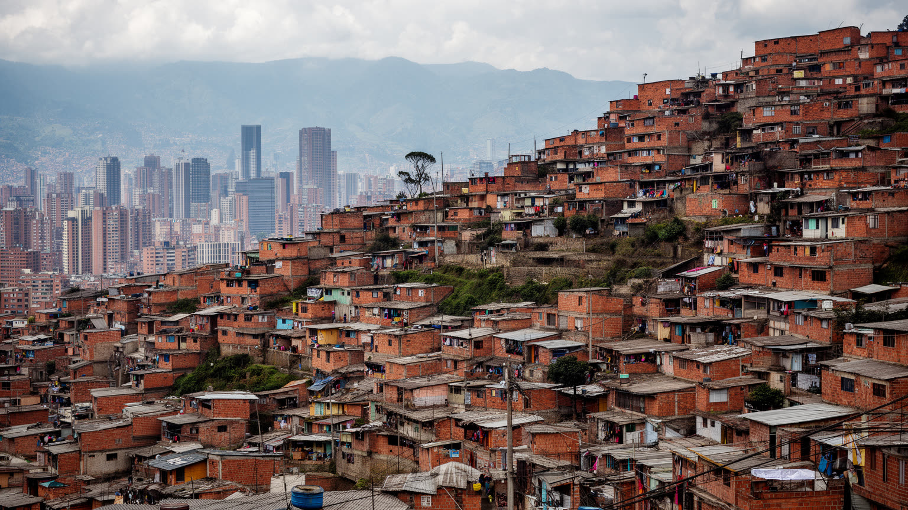
ボゴタの住宅格差は、地図の方角、標高、交通時間として見えます。北部には所得の高い住宅地、私立学校、オフィス、商業施設が集まり、南部や周縁部には低所得の住宅地、非公式な造成地、長い通勤を抱える世帯が多くなります。斜面に広がる地区では、眺望がある一方で地滑り、道路の狭さ、上下水道、公共施設へのアクセスが課題になります。コロンビアの都市では公共料金などに所得階層を反映する仕組みがあり、住宅の場所は社会的な分類と結びつきやすくなります。国内避難民、地方からの移住者、ベネズエラから来た人々は、安い家賃と仕事を求めて周縁へ集まり、非公式労働や長距離通勤に頼ることがあります。再開発や都心回帰は建物を更新しますが、家賃の上昇で小さな店や長く住んだ住民を押し出す危険もあります。安全な住宅とは、壁の強さだけでなく、バス停、学校、医療、保育、仕事、近所の支援へ届くことです。子どもの通学路が安全か、雨の日に斜面を下りられるか、夜勤後に帰れる交通があるかで、同じ都市の生活条件は大きく変わります。住所は単なる位置ではなく、機会への距離を示す情報です。ボゴタの社会問題は、貧困を遠くに置く都市構造と深く結びついています。住宅政策、公共交通、治安、教育を別々に扱うと、格差は通勤時間と住所の評価として固定されてしまいます。
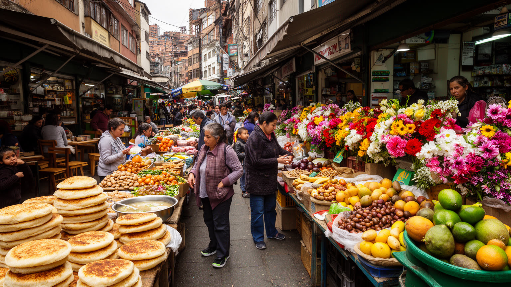
ボゴタの食文化は、アンデス高地の寒さと国内各地から集まる食材によって形作られます。朝の温かい飲み物、アヒアコのような鶏とじゃがいものスープ、トウモロコシのアレパ、エンパナーダ、チョコラーテ、フルーツジュースは、標高の高い都市の日常に合う食です。パロケマオのような市場では、花、果物、肉、魚、香草、地方の食材が並び、農村と首都の結びつきが見えます。コロンビアは地域差の大きい国であり、カリブ海岸、太平洋岸、アンデス各地、リャノの味がボゴタの食堂や屋台に持ち込まれます。市場は観光客にとって色彩豊かな場所ですが、卸売、清掃、早朝の搬入、価格交渉、女性商人の技能、配送労働によって支えられる職場でもあります。食の豊かさの背後には、農村の土地問題、輸送費、気候変動、インフレ、低所得世帯の栄養不安があります。高級レストランがコロンビア料理を洗練させる一方、日々の昼食を安く支える食堂と市場が都市の基礎です。朝早い市場では、花を束ねる手、果物を運ぶ台車、通勤前のスープが同じ時間に動きます。食は観光の楽しみである前に、働く人を温める都市の燃料です。小さな屋台も通勤者の朝を支えます。市場の声も残ります。ボゴタの食を読むことは、皿の上の味だけでなく、山地の農業、首都の消費、労働者の時間をつなぐ経路を見ることです。
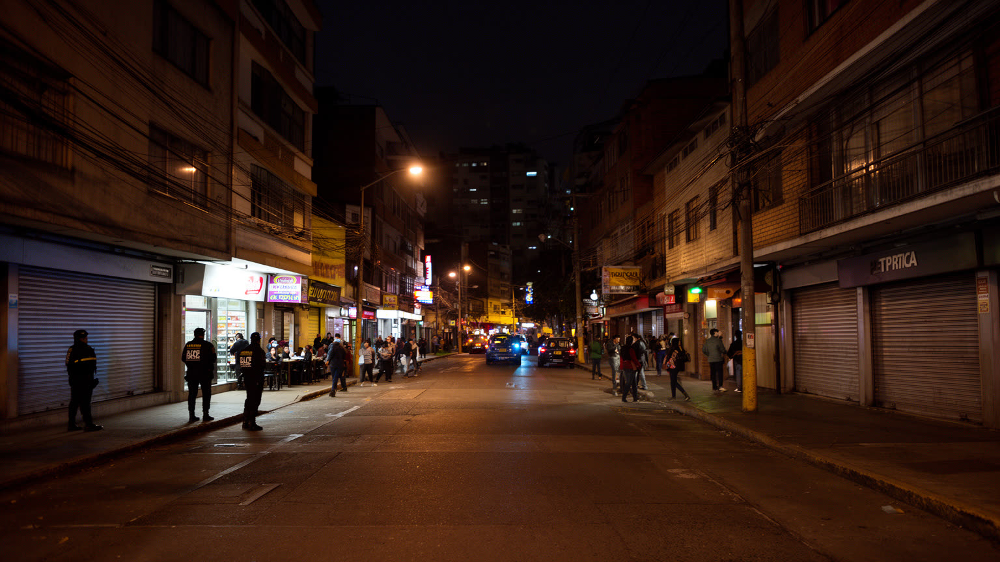
ボゴタの治安は、都市の印象を大きく左右します。かつての暴力と麻薬経済の記憶は強く、現在も窃盗、強盗、性暴力、夜間の不安、警察への不信が生活に影響します。観光客は旧市街や繁華街で注意を促され、住民も移動時間、路線、スマートフォンの扱い、帰宅手段を細かく選びます。しかし、治安の話だけでボゴタを暗く描くと、街の創造性を見落とします。チャピネロ、ラ・マカレナ、テウサキージョ、旧市街にはバー、ライブハウス、劇場、ギャラリー、LGBTQコミュニティの場、学生の集まる店があり、夜の文化が都市を柔らかくします。安全は警察の数だけでなく、明るい歩道、信頼できる交通、公共空間の使われ方、ジェンダーへの配慮、地域の目によって作られます。治安対策が貧しい若者や路上生活者を排除するだけなら、問題は見えにくい場所へ移るだけです。女性や性的少数者にとっては、店の入口、タクシーの乗り場、帰宅時の連絡までが安全の一部になります。店主や近所の人が顔を知る関係も、夜の安心を支える小さな制度です。駅前の照明も重要です。街灯も。ボゴタの夜を読むには、警戒と楽しさ、恐怖と音楽、都市の傷と新しい表現が同じ通りにあることを見る必要があります。安全な都市とは、観光客が歩けるだけでなく、住民が性別や所得にかかわらず帰宅できる都市です。
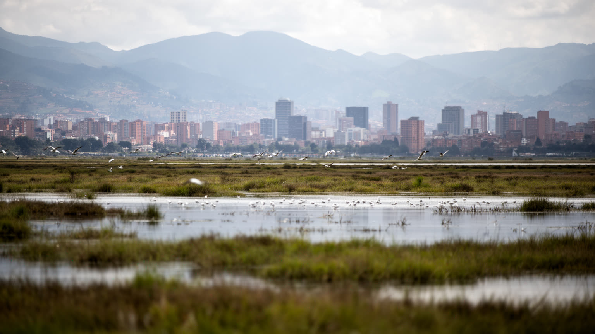
ボゴタの環境を支えるものは、街中の公園だけではありません。周辺のパラモと呼ばれる高山湿原、山地の水源、都市内外の湿地、ボゴタ川の流域が、飲み水、洪水調整、生物多様性、気候の安定に関わります。都市の拡大は湿地を住宅や道路へ変え、河川の汚染と洪水リスクを高めてきました。雨季には低地の冠水、斜面の地滑り、道路の混乱が起きやすく、乾季には大気汚染や火災、貯水量への不安が問題になります。高地の涼しい気候は冷房需要を抑えますが、ディーゼル車、渋滞、産業、山に囲まれた地形は空気を悪化させます。水源保護は単なる自然保護ではなく、首都の生活そのものを守る政策です。パラモを鉱業や農地開発から守ること、湿地を都市の余白として残すこと、下水処理と河川再生を進めることは、飲み水と災害対策に直結します。低所得地区ほど環境リスクを受けやすいため、緑地や清潔な水へのアクセスは社会的公正の問題でもあります。水不足が起きれば節水は全市民の課題になりますが、貯水タンクや広い住宅を持つ世帯と、狭い住まいで暮らす世帯では負担が違います。環境政策は平均値ではなく、弱い地区の条件から考える必要があります。雨水管理も生活を守ります。水も。ボゴタの未来は、建物を増やす速度だけでなく、水と湿地を都市の骨格として扱えるかにかかっています。
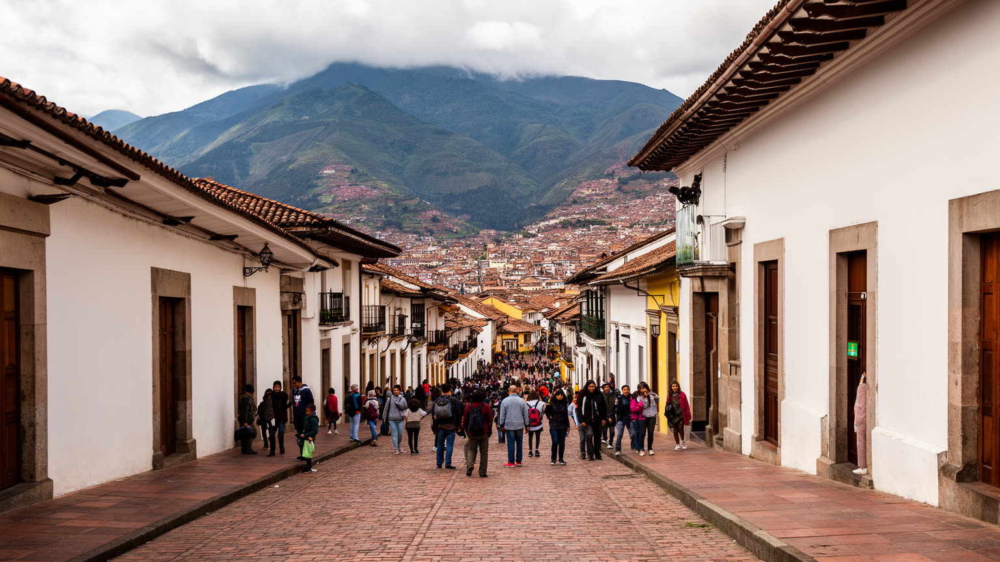
ボゴタ観光の入口は、ラ・カンデラリアの旧市街、黄金博物館、ボテロ美術館、プラサ・デ・ボリバル、モンセラーテの丘です。植民地期の建築、共和制の政治空間、先住民の金工芸、現代の壁画が近距離で重なり、首都の歴史を歩いて理解できます。モンセラーテから見る都市は、山裾から平野へ広がる巨大な生活圏を一望させ、観光客に方角と標高を実感させます。しかし、観光地の背後には住民の暮らし、大学、行政、教会、路上商、警備、清掃が続いています。旧市街の再生は建物を保存し、観光収入を生みますが、家賃上昇や夜間の治安、学生街との緊張も生みます。黄金博物館の展示は美しい工芸を見せるだけでなく、植民地支配以前の社会、略奪、国家が文化遺産をどう語るかを考えさせます。観光の質は、写真を撮る場所の多さではなく、歴史の複雑さを消さずに歩けるかで決まります。ガイド付きの散策、食市場の訪問、壁画ツアーは収入を生みますが、地域の暮らしを見世物にしない配慮も必要です。観光が住民の店や公共空間を支える時、遺産は生きた都市資源になります。高地の寒さや雨も旅の記憶を変えます。雨具も旅を深く助けます。ボゴタを訪れるなら、旧市街だけでなく市場、図書館、公園、壁画、BRTの駅まで見ることで、首都の遺産が過去と現在の生活をつなぐものだと分かります。
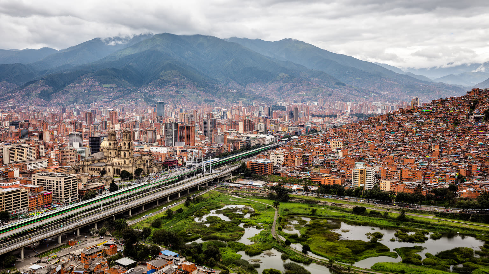
ボゴタを読むことは、コロンビアを一つのイメージに閉じ込めず、山地、首都制度、移動、紛争、文化、格差、環境を同時に見ることです。大統領府と議会は国家の中心を示しますが、その近くには学生の抗議、教会、博物館、壁画、観光客、路上商がいます。金融街と大学は知識経済を作り、BRTと自転車道は都市の機会を広げますが、混雑と長い通勤は格差を毎日感じさせます。国内避難民や移民の存在は、首都が地方の問題から切り離されていないことを示します。市場の食、夜の文化、カトリックの儀礼、若者の音楽は、都市に柔らかさを与えます。一方で、治安不安、住宅の分断、水源の脆さ、大気汚染、政治的不信は、ボゴタの成熟を試しています。ボゴタの重要性は、経済規模だけでなく、コロンビア社会の矛盾と可能性が高原の街路に集まる点にあります。山に囲まれた首都は、遠い地方の声を受け止めながら、世界へ国の姿を見せる窓にもなっています。観光客が短時間で見る旧市街の美しさと、住民が毎日経験する通勤、雨、治安、家賃の重さを重ねると、都市の評価は単純ではなくなります。強い制度と不安定な生活が近いことが、ボゴタの読みどころです。旧市街から北の金融軸、南西の住宅地、湿地と空港まで歩く視点を広げると、ボゴタは観光名所ではなく、現代ラテンアメリカを読み解く立体的な都市として見えてきます。